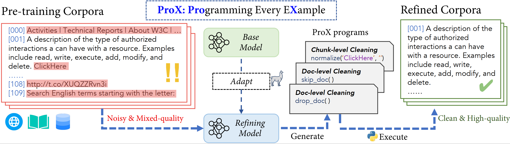
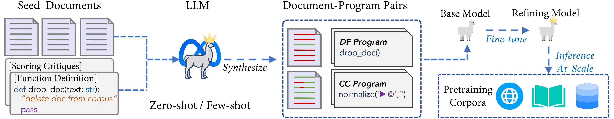
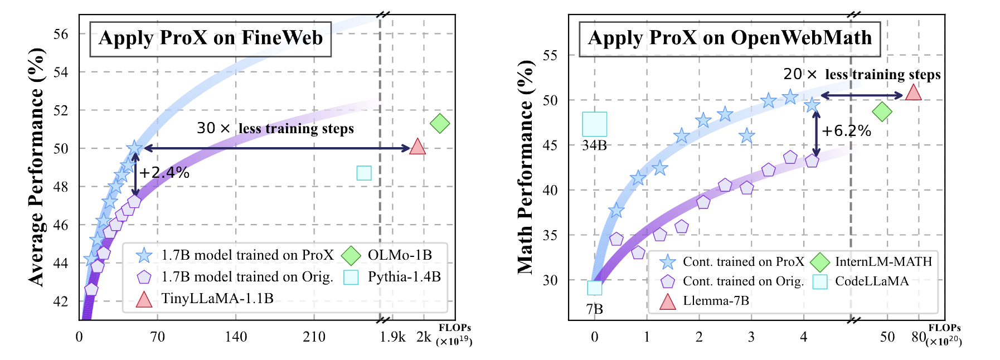

Still relies heavily on human experts crafted rules to improve the quality of pre-training corpora? Depsite its efficency, these rules lack the flexibility to address the unique
characteristics of individual example effectively and struggle to handle fine-gained cleaning operations. Meanwhile, applying tailored rules to every example is impractical for human experts.
🚀 We introduce Programming Every Example (ProX), a novel framework that treats data refinement as a programming task, enabling models to refine corpora by generating and executing fine-grained operations, such as string normalization, for each individual example at scale.
ProX go through 2 refining stages focusing on different scopes: document level and chunk level. We use very small language models (e.g., 🐣0.3B) to generate programs for each example in the training data, and then use these programs together with a Python Executor to refine the data.
We demonstrate that ProX could significantly improve the quality of pre-training corpora.
A 🐘1.7B language model trained on corpus refined by ProX with 50B tokens training perform similarly to TinyLlama-1.1B-3T, which saves 30 times training compute!
ProX works well across various corpora (e.g., C4, RedPajama-v2, FineWeb) and model sizes
ProX can refine domain-specific corpora (such as math) without customization, boosting math reasoning performance by 7%~20% for models like Mistral-7B and Llama-7B. Additionally, ProX builds a performance-comparable Llemma-7B model with 20x less training compute
Quantitative analysis demonstreate that investment compute on the inference side to refine corpora is totally worthwhile.
Programming Every Example
To keep things lean, the steps are generally as follows:
Step 1: Adapt a base language model (typically less than 1B) to perform data refinement via fine-tuning on synthetic supervised data. (How to adapt? see below👇)
Step 2: Apply this refinement model to generate programs for each docment in the corpus
Step 3: Execute the generated programs for each docment, producing refined corpus ready for pre-training.

ProX Frameworks, lifting pre-training data quality by generating programs for each example in the training data.
How to adpat a LM to perform data refinement

ProX Adaptation Pipeline.
To keep things lean, the steps are generally as follows:
Step 1: Prompt a advanced language model (i.e., Llama-3 series) to annotate random seed documents based on designed prompts (including scoring criteria, function interface and description)
Step 2: Supervisedly fine-tine a base language model (often less than 1B) on the synthetic data
Then, we can employ this refinement model to annotate docments from the corpus at scale.
ProX Program Design
Stage
Function Interface
Function Description
Document Level
drop_doc()
Delete the document from corpus.
keep_doc()
Keep the document in corpus.
Chunk Level
remove_lines(line_start:int, line_end:int)
Delete noisy lines from the chunk.
normalize(source_str:str, target_str:str)
Replace strings with normalized ones.
skip_chunk()
Keep the chunk as it is.
Benchmarking Performance
TL;DR: ProX could significantly lift the quality of the pre-training corpora (e.g., C4, RedPajama-V2, FineWeb and OpenWebMath), enabling the creation of performance-equivalent language models with far fewer training FLOPs.

Training FLOPs v.s. average downstream performance. Although these corpora have gone through expert-crafted rules, applying PROX still yields significant improvements over these baseline models trained with original data corpus. Moreover, with much less training FLOPs, model trained on PROX curated data show comparable performance with existing models.
Main Results: applying on RedPajama-V2
We first conduct a series of experiments to verify the effectiveness of each ProX operation. We begin by training a 750M on the RedPajama-V2 raw data for approximately 26B tokens (or 12.5K steps) as the initial baseline. Then, we apply different data refinement approaches (i.e., various rules and ProX) to the raw data and pre-train the model from scratch with the same steps.
We evaluate the performance across ten selected tasks using lighteval's implementation (Fourrier et al., 2023), and report the zero-shot accuracy.
Method
ARC-C
ARC-E
CSQA
HellaS
MMLU
OBQA
PIQA
SIQA
WinoG
SciQ
AVG
# Win
Raw
26.1
44.3
29.7
39.1
27.3
29.2
66.9
39.0
52.0
67.4
42.1
1 / 10
Apply Existing Rules
Gopher Rules
25.7
44.0
31.3
40.2
27.3
29.0
66.3
39.0
51.2
68.9
42.3
0 / 10
C4 Rules
25.0
46.0
31.0
40.5
27.1
29.2
68.5
40.5
51.7
66.6
42.6
2 / 10
FineWeb Rules
25.2
46.8
32.6
39.6
27.2
29.0
66.5
39.4
52.4
69.2
42.8
2 / 10
Gopher + C4 + FineWeb
25.2
43.9
30.0
41.9
27.5
31.0
67.0
39.9
51.9
65.3
42.3
0 / 10
ProX(Ours): D = Document-level programming, C = Chunk-level programming.
ProX-D
26.6
49.7
30.1
40.5
29.4
30.4
66.3
39.0
51.2
71.6
43.5
2 / 10
ProX-D+C
26.4
51.9
30.9
42.4
29.4
31.6
67.9
40.0
52.2
73.5
44.6
5 / 10
Beyond heuristic rules, ProX also outperforms existing data selection methods
We adopt the setting of MATES (Yu et al., 2024) to enable a controlled comparison with existing data selection methods, showcasing the effectiveness of ProX. Specifically, we apply ProX to the C4 dataset and pre-train the model using the Pythia architecture. We report both zero-shot and 2-shot performance using the LM-eval-harness.
Applying ProX on Domain-specific Continual Pre-training
We also demonstrate the potential of ProX on the continual pre-training scenario, specifically, in the mathematical domain. We apply the very same pipeline as in general domains to the already cleaned OpenWebMath corpus.
All models are tested using few-shot CoT prompts. Llemma and InternLM2-Math are continual pre-trained models from CodeLlama and InternLM2 with public available data, respectively. Note that the unique tokens and training tokens in the column refer exclusively to the token numbers from math-specific corpora (calculated by corresponding tokenizers). +: MQA evaluation of InternLM2 is based on an alternative prompt due to non-prediction issues with the original prompt. The bold entries represent the best results within the same base model.
Model
Size
Method
Uniq Toks
Train Toks
GSM8K
MATH
SVAMP
ASDiv
MAWPS
TAB
MQA
MMLU STEM
MATH
AVG
Existing Continual Pre-training for Reference
DeepSeek-LLM
1.3B
-
-
-
2.9
3.0
-
-
-
-
-
19.5
15.6
-
1.3B
-
14B
150B
11.5
8.9
-
-
-
-
-
29.6
31.3
-
CodeLlama (Base)
7B
-
-
-
11.8
5.0
44.2
50.7
62.6
30.6
14.3
20.4
21.9
29.1
34B
-
-
-
31.8
10.8
61.9
66.0
83.4
51.6
23.7
43.0
53.1
47.3
Llemma
7B
-
55B
200B
38.8
17.2
56.1
69.1
82.4
48.7
41.0
45.4
59.4
50.9 (+21.8)
34B
-
55B
50B
54.2
23.0
67.9
75.7
90.1
57.9
49.8
54.7
68.8
60.1 (+12.8)
InternLM2
7B
-
-
-
27.0
6.6
49.0
59.3
74.8
40.1
20.9 +
19.0
28.1
36.1
20B
-
-
-
50.6
18.8
72.5
75.9
93.9
45.4
33.1
53.7
59.4
55.9
InternLM2-Math
7B
-
31B
125B
41.8
14.4
61.6
66.8
83.7
50.0
57.3
24.8
37.5
48.7 (+12.6)
20B
-
120B
500B
65.4
30.0
75.7
79.3
94.0
50.9
38.5
53.1
71.9
62.1 (+6.2)
Applying Data Refinement Approaches
TinyLlama (Base)
1.1B
-
-
-
2.8
3.2
10.9
18.0
20.2
12.5
14.6
16.4
21.9
14.7
TinyLlama (CPT)
1.1B
-
15B
15B
6.2
4.8
22.3
36.2
47.6
19.3
11.6
20.7
25.0
21.5 (+8.1)
1.1B
Rho
15B
9B
7.1
5.0
23.5
41.2
53.8
-
18.0
-
-
-
1.1B
Rule
6.5B
15B
4.5
2.8
17.5
29.4
39.3
15.1
12.4
19.4
25.0
18.4 (+3.7)
1.1B
ProX
5B
15B
9.0
5.6
23.8
41.9
56.9
22.2
15.6
26.8
31.2
25.7 (+11.0)
Llama-2 (Base)
7B
-
-
-
14.1
3.8
39.5
51.6
63.6
30.9
12.5
32.9
34.4
31.5
Llama-2 (CPT)
7B
-
15B
10B
29.6
13.6
49.2
61.9
78.4
36.3
31.9
40.5
43.8
42.8 (+11.3)
7B
ProX
5B
10B
30.6
16.8
50.2
63.7
79.3
37.3
40.1
43.8
53.1
46.1 (+14.6)
CodeLlama (Base)
7B
-
-
-
11.8
5.0
44.2
50.7
62.6
30.6
14.3
20.4
21.9
29.1
CodeLlama (CPT)
7B
-
15B
10B
31.1
14.8
51.4
62.1
81.2
33.6
30.4
40.5
43.8
43.2 (+14.1)
7B
ProX
5B
10B
35.6
17.6
55.8
67.9
82.7
41.3
38.9
42.6
62.5
49.4 (+20.3)
Mistral (Base)
7B
-
-
-
40.6
11.4
65.4
68.5
87.0
52.9
32.3
50.0
56.2
51.6
Mistral (CPT)
7B
-
15B
10B
44.4
19.2
65.2
69.6
88.4
46.6
43.1
50.8
65.6
54.8 (+3.2)
7B
ProX
4.7B
10B
51.0
22.4
64.9
72.9
89.2
49.8
53.0
54.2
75.0
59.2 (+7.6)
Please refer to our paper for more details.
What's More?
ProX might just be the art moment for data engineering in language model pre-training. It's a pioneering effort to optimize pre-trained corpora through various advanced operations powered by language models at scale.
But this is only the beginning! Stay tuned for more exciting updates, and follow us on Hugging Face and GitHub for the latest developments.
BibTeX
@article{2024prox,
title={Programming Every Example: Lifting Pre-training Data Quality Like Experts at Scale},
author={},
journal={arXiv preprint arXiv:xxxx.xxxxx},
year={2024}
}